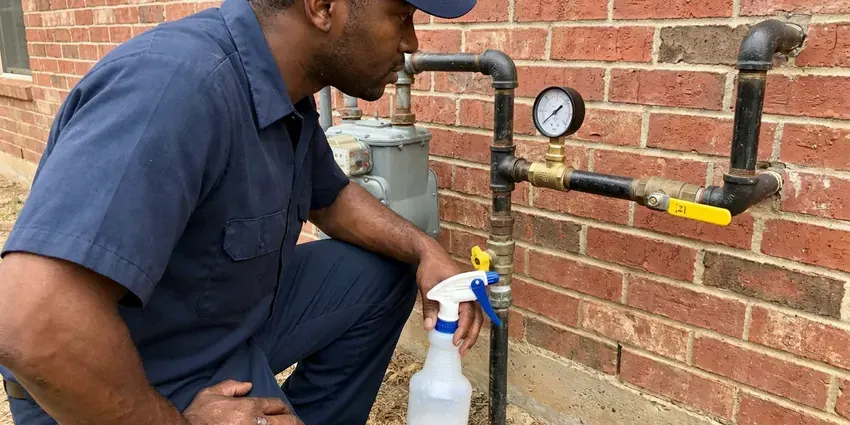

Gas Water Heater Repair in Methuen Town, MA
Lukewarm water from a gas tank in Methuen Town, MA usually means a failing part, not a dead heater. BWM Plumbing tracks down the cause and replaces it.
- Pilot & Thermocouple Repair
- Natural Gas and Propane
- Draft and Leak Checks
- Upfront Pricing

Pilot will not stay lit? Get your gas water heater fixed in Methuen Town, MA.
We leak test and check draft before we wrap up.
Fixing Gas Water Heaters in Methuen Town, MA Homes
At BWM Plumbing, a licensed plumber diagnoses the gas water heater in your Methuen Town, MA home with a millivolt meter and a manometer before quoting anything. Every call follows that process, whether it is a pilot or a burner. We show you the test result.
Our expertise includes:
- Thermocouple, thermopile and pilot assembly swaps on sealed burners
- Pilot and Burner Repairs
- Diagnosing and repairing pilot outages

Additional Plumbing Repair Services in Methuen Town, MA
We offer expert plumbing repair services across Methuen Town, MA to fix leaks, restore flow, and keep your system running smoothly.




Professional gas leak repair, Methuen Town

Customers
Why Choose BWM Plumbing for Gas Water Heater Repair in Methuen Town, MA?
Choosing BWM Plumbing for gas water heater repair gets you a plumber who checks combustion and draft on every visit, not just the tough ones. That habit catches vent problems early. Most of those fixes are small.
- Gas Safety, We leak test every joint we open before relighting.
- Stocked Controls, Universal and brand-specific gas valves and pilot kits are stocked on our trucks.
- Real Parts, We use manufacturer approved controls and thermocouples.
Citywide Coverage
Downtown or out on the edges of Methuen Town, a BWM Plumbing tech can usually reach you the same day, often within a few hours. Scheduling is quick. Most calls get a two-hour arrival window.
Experienced Team
The team has handled everything from a five-minute pilot relight to a power vent motor swap and a full flue rebuild. That range means fewer surprises. Whoever shows up has done your repair many times.
Safety-First Approach
The fuel gas code your town adopted spells out sediment traps and shutoff valve placement, and we follow it on every repair we do. We confirm the heater has enough combustion air. Clearance to combustibles is measured too.
Trusted Certified Methuen Town Plumbing Services Professionals
At BWM Plumbing, we take pride in licensed, certified plumbing services throughout Methuen Town, MA. Credentials matter in this trade. Every repair, install and maintenance visit follows strict safety and quality rules, and the plumbers doing the work carry recognized industry credentials.
Call Us Now PHCC Plumbing Contractor Recognition
PHCC Plumbing Contractor Recognition Better Business Bureau (BBB) Accreditation
Better Business Bureau (BBB) Accreditation Angi Certified Pro
Angi Certified Pro ISO 9001 Quality Management Certification
ISO 9001 Quality Management CertificationWhat Our Gas Water Heater Repairs Cover in Methuen Town, MA
Emergency Gas Water Heater Repair in Methuen Town
Hot water that quits before work on a weekday is the call we get most often. We keep the morning schedule open for no-heat calls whenever we can. The BWM Plumbing tech shows up with thermocouples, pilot assemblies, a universal gas valve and a relief valve on the truck, so the common failures get fixed on the first visit instead of the second. If you smell gas, that call goes to the front. Leave the house and call the gas utility first.

Tank Leaks and Pressure Problems in Methuen Town, MA
Water on the floor near the heater does not always mean the tank is gone. A lot of the time it is the drain valve, the T&P valve or a dripping supply fitting. A relief valve that weeps after every heating cycle usually points to high street pressure or a missing expansion tank, and both are cheaper to fix than a water heater in a Methuen Town, MA home. If the bottom seam is wet, the tank has failed. No patch fixes that.
Gas Water Heater Code Checks in Methuen Town, MA
Fuel gas code covers more of a water heater repair than most people expect. We check for a sediment trap, an approved flex connector and a shutoff valve within reach of the unit. Garage installs in Methuen Town, MA need the burner raised 18 inches off the floor unless the heater is listed as vapor resistant, and strapping goes on wherever the local code asks for it. We measure clearances as well.
Thermostat & Gas Valve Repair in Methuen Town, MA
Scalding water at the kitchen tap is a valve problem until proven otherwise. Some controls drift high as the sensor ages, and some dials get turned past hot. Our plumbers in Methuen Town, MA measure the outlet temperature at the nearest fixture, compare it to the dial and replace the gas control if it is overshooting, because water at 140 degrees can burn a child's skin in a few seconds. Most homes do fine at 120.
Urgent Gas Water Heater Repair in Methuen Town, MA
A gas smell, a flooded garage or a relief valve blowing steam are the calls that cannot wait until Monday. BWM Plumbing runs emergency gas water heater repair across Methuen Town, MA, with a tech who can shut the unit down, find the cause and make it safe the same day. Any gas smell gets handled first. Open a door on the way out and call the gas utility from the yard. After that, we handle the heater.
Pilot Light and Ignition Service in Methuen Town
No hot water and a dark pilot window usually point to the ignition side of the heater. The tech pulls the pilot assembly and checks the thermocouple tip, the orifice and the igniter wire. A thermocouple that tests weak on the millivolt meter will not hold the gas valve's magnet open, so the pilot drops out a minute after you relight it by the label. Common pilot kits ride on most of our trucks.
Gas Control Valve Replacement in Methuen Town, MA
Honeywell and White-Rodgers valves report faults with a blinking LED, and the flash count matches a chart on the label. The tech reads the code and tests the thermopile and sensors before condemning the valve. Valves do fail. When the control itself is the problem, we replace it with an exact-match valve or a listed universal model, set the temperature and leak test every joint on the gas train before relighting. You get the old valve back if you want it.

Gas Water Heater Repair Cost in Methuen Town, MA
Thermocouple and pilot repairs usually run $150 to $350. Gas control valves often come in at $350 to $700 installed. Power vent blower work runs $400 to $800, and a full replacement with a new gas tank generally costs $1,600 to $3,000 depending on size, venting and whether the install needs code updates. Age of the tank shapes what we recommend. On a tank older than twelve years, you get both prices side by side.
Gas Water Heater Repair Near Me in Methuen Town, MA
Gas water heater repair is half plumbing and half gas fitting. BWM Plumbing sends techs trained on both, so the same person who replaces your gas valve also checks the flue and the combustion air. They test for leaks with an electronic detector and soap solution. They also check draft.
Our techs work Methuen Town every day, so they know which neighborhoods have older atmospheric tanks and which have newer power vent units. It cuts down on guesswork. Most visits start with a quick look at the vent. A heater with a disconnected flue or a blocked chimney gets fixed before anything else, since a bad vent can send carbon monoxide into living space.
BWM Plumbing at a Glance
- Licensed and insured plumbers serving Methuen Town, MA
- Same-day appointments and 24/7 emergency response
- Clear written estimates, no hidden fees
- 4.9-star rated by 434+ Massachusetts customers
Methuen Town Map
Methuen Town Information
- Population
- 53,455
- Area codes
- 978/351/603
- Service area
- Methuen Town and towns within a 40 mile drive
- Nearby
- Lawrence, Haverhill, Lowell, Peabody
Much of the public water in Massachusetts is soft and slightly acidic, which is easy on fixtures but can slowly eat through copper pipe. A gas tank that gets flushed and checked once a year holds steady hot water longer.
Expert Services
Call BWM Plumbing for honest, reliable plumbing from people who know the trade in Methuen Town, MA.
Our Specialized Plumbing Services in Methuen Town, MA
At BWM Plumbing, you get every kind of plumbing service from one company across Methuen Town, MA. From leak detection to full system installs, our team works fast and charges fair prices on homes and commercial properties alike. Here are the core services we offer:


The Gas Water Heater Repair Process in Methuen Town, MA
BWM Plumbing uses the same routine on every gas water heater repair in Methuen Town, MA. Nothing happens without you knowing.
Request a Visit
Call (857) 335-4894 to book your gas water heater repair. We ask what the heater is doing and book a visit to your Methuen Town home.
Hands-On Inspection
Your tech checks every part from the gas line to the flue. Nothing gets replaced until it tests bad.
Clear Explanation & Repair
We explain the problem plainly and quote the repair before starting. After your okay, the repair gets done with quality parts.
Frequently Asked Questions About Gas Water Heater Repair in Methuen Town
Most gas water heater repairs in Methuen Town, MA land between $150 and $800. Thermocouple and pilot work is the cheap end, roughly $150 to $350. A gas control valve replacement usually runs $400 to $800 or more once you add the part, the labor and the leak testing on every joint we disturb. You get the price after diagnosis.
Usually, yes. The common causes are a drifting thermostat, a weak burner or a tank half full of sediment. A broken dip tube is another possibility, since a cracked tube lets incoming cold water mix with the hot at the top of the tank instead of being delivered to the bottom near the burner. We check the easy causes first.
Most repairs take one to three hours. A thermocouple or pilot assembly is often done inside an hour. A gas control valve, a power vent blower or a flue rebuild takes longer, and if the part has to be ordered from a supply house the repair can stretch to a second visit a day or two later. You hear the timeline before any work begins.
Flush the tank once a year. Pulling a few gallons from the drain valve every quarter keeps sediment down. Have the anode rod checked every three to four years, test the relief valve by lifting the lever, and vacuum the flame arrestor screen at the base if the heater sits in a dusty garage. BWM Plumbing can do all of that in one visit. With hard water, flush more often.
Yes, by the label instructions. Turn the control knob to off, wait the full five minutes the label calls for so any gas clears, and then follow the steps in order. A pilot that fails twice or dies again within a day means stop. Any gas smell means you stop and get outside.
That light is the valve's diagnostic code. The flash pattern lines up with a chart printed on the heater's label. Common codes point to a weak thermopile, an open thermal switch or a sensor fault, and we test the part the code points to before replacing the valve. Count the flashes before you call.
Rheem, Bradford White, State and Ruud are the ones we see most, along with A.O. Smith and Whirlpool tanks. Most share pilot and valve parts. Bradford White has its own kits, which we stock. Off-brand or discontinued tanks can often run on listed universal parts.
They do. We cover the labor, and the manufacturer covers the part. The exact length depends on the component, so a new gas valve and a new thermocouple may carry different terms, and the invoice spells out each one in plain language before we leave. Hang on to that paperwork.
What Our Customers Say About Our Plumbing Experts

Nathan E.
Our tankless heater kept throwing an error code and shutting off mid shower. The tech flushed the heat exchanger, which was full of scale, and replaced a bad flow sensor. Hot water has been steady for half a year now.
Water Heater Repair · Lawrence, MACarlos V.
Our house still had galvanized pipe, and upstairs the shower was a trickle. The crew repiped everything in PEX over three days and patched every drywall hole before they left. The pressure difference is night and day.
Repiping · Methuen Town, MADaniel K.
A pipe burst in the garage ceiling at 11 at night. Someone answered on the second ring, and the plumber was in my driveway about fifty minutes later. He shut off the main, cut out the split section, and had water back on before 2 am.
Emergency Plumbing · Lawrence, MA
Marcus H.
Grease from the fryer line kept clogging the kitchen drain at my diner. BWM Plumbing hydro jetted the line after closing, showed me the buildup on camera, and set us up on a quarterly cleaning so it does not catch us on a Friday again.
Drain Cleaning · Methuen Town, MA
Laura S.
Our 40 gallon tank started leaking from the bottom after thirteen years. The tech hauled the old one out, set a new unit with a fresh expansion tank, and had hot water running in about four hours. He took the old tank with him too.
Water Heater Replacement · Medford, MA
Mark T.
The floor drain in our office break room backed up every few weeks. The plumber ran a cable, then put a camera down and found roots at a joint about thirty feet out. Seeing it on the screen made the decision easy.
Drain Cleaning · Medford, MA